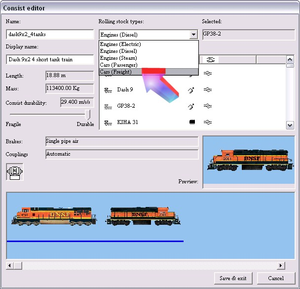
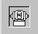

Now that you understand this screen, let's create a consist. I'm going to create a simple consist of two locos, four wagons and a caboose - all default vehicles.
Your consist needs a name: get used to the fact that in MSTS, you'll name everything twice, once for the filename, then again with a display name that will appear whenever you select the locomotive when "Exploring the Route" or creating an activity.
The "Name" (filename) I've used is "dash9x2_4tanks" and the "Display Name" is "Dash 9x2 short tank train". Make sure the Display Name is unique or you may have difficulty in finding it later on.
For example, I've identified light engine consists with the loco number, otherwise you'd have many identical-appearing consists in the consist list):
From drop-down box marked "Rolling Stock Types", select Engines (Diesel); and a list of diesel locomotives will be presented in the "Rolling Stock" window below.
Using the vertical slider bar, scroll down the list until you find the locomotive you want. Note I've clicked the Name field to sort the locos by name and widened the field to make it easier to read the title of the locomotive. A single click on the loco name will bring up a thumbnail view of the loco ........
... and a double-click on the name will place the locomotive in the lower window. This is where you will build up your consist.
For more than one loco of the same type, double-click on the name again.
Or choose another locomotive - here we've chosen the default GP38 as the second locomotive.
Double-click on the name and it takes its position behind the previously placed item of rolling stock.
To reverse the direction of a loco, right click on the loco in the lower window (I've right-clicked on the GP38 in the image below).
Move up and select "Cars(Freight)" from the Rolling stock types drop-down box.

Once again, scroll down, find the car you want (clicking once on the names to see the thumbnails if you need), then double-click to add the car to your growing consist and continue. (When you're building up passenger trains please note that there's a (non-fatal) bug in the Consist Editor that tips you out of the Cars (Passenger) List into the Cars (Freight) list if you click on a steam loco tender while browsing or selecting.)
We'll select the "US2Chemicar" wagon.
To delete a car or loco from the consist, click and hold on the unwanted vehicle and drag the cursor over to the "car crusher" symbol that looks like this:

Release the mouse button and the wagon is removed from the consist.
Keep double-clicking on the car(s) you wish to add to the consist. Here I've added a US2Caboose and then some more USChemicars.
As you add more cars, they will be added to the consist off-screen. You can view these wagons by dragging the scroll bar left or right (arrowed).
To move a vehicle up or down the consist, click and drag the vehicle left or right. A vertical red line will appear indicating where the vehicle will be placed.
When you release the mouse button, the wagon will appear where you've placed it.